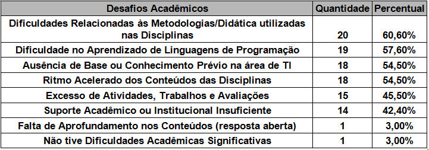
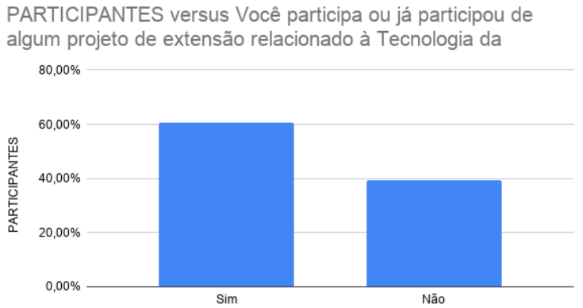
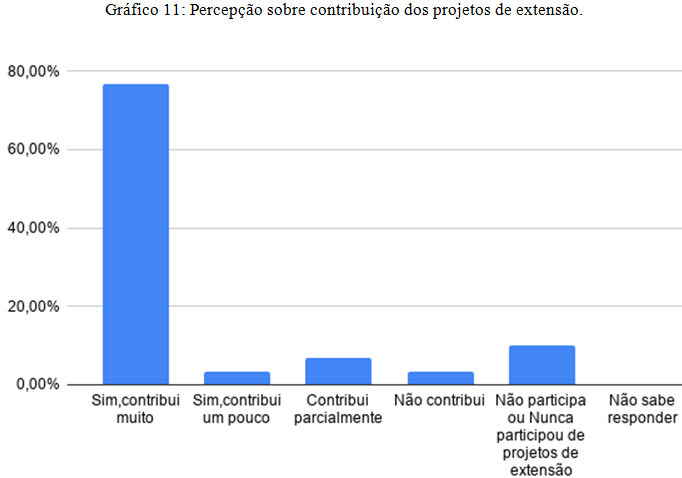

Resultados da Pesquisa
33
Participantes
60,6%
Já Participaram de Projetos de Extensão
85,2%
Consideram que os Projetos de Extensão Contribuem muito para a Permanência Feminina na Graduação de Cursos na área de Tecnologia da Informação.
Principais Desafios Acadêmicos
Percentual das Respostas das Participantes.

Participação em Projetos de Extensão

Contribuição dos Projetos de Extensão na Graduação de TI.

O percentual de 85,2% Corresponde a 23 das 27 respostas válidas dessa pergunta sobre a Contribuição Positiva desses Projetos de Extensão para Inclusão e o Fortalecimento da Participação Feminina na área de Tecnologia da Informação.
Considerações Finais
Os resultados indicam que os Projetos de Extensão Podem Contribuir para a Aprendizagem Prática, o Desenvolvimento de Habilidades Técnicas, a Construção de Redes de Apoio e o Fortalecimento da Confiança e do Pertencimento das Mulheres na área de TI.
A extensão não elimina sozinha as Desigualdades de Gênero e as Dificuldades de Aprendizagem, mas Representa uma Estratégia importante para Fortalecer a Participação Feminina na área da Tecnologia da Informação.